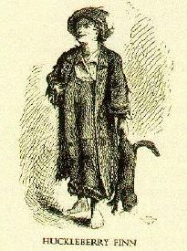
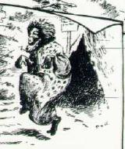
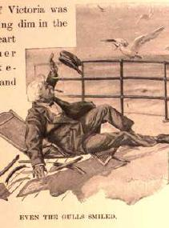
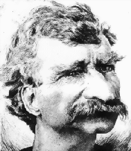
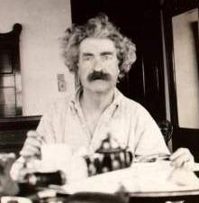

|  | 100'S OF ILLUSTRATIONS!" That's what MT's contemporary readers knew they would find in each of his popular books. These pictures played a major role in shaping the way MT's texts were read. In this site are hundreds of illustrations too, including hundreds from the various publications of MT's work. The one at left, by True Williams, is the first glimpse readers had of Huck Finn. Clicking on it will take you to the exhibit on Williams' illustrations of Tom Sawyer. |
|  | The pictures drawn from MT's texts illustrate more than one kind of story. How Jim was depicted, for example, gives us access to popular images of African Americans in MT's time, and since. The picture at left was drawn by E.W. Kemble, the original illustrator of Huck Finn, for an 1899 newspaper article. Clicking on it will take you to a collection in the Huck Finn part of this site of that brings together representations of Jim from all the illustrated American editions of the novel between 1885 and 1985. |
|  | To many readers the most vivid and best-known of MT's characters was "Mark Twain" himself. He was the central character in Innocents Abroad, his best-selling book, and many of his other books and sketches. The depiction at left is from Following the Equator, published when MT was over 60. Clicking on it will take you to an exhibit in the part of the site called "Sam Clemens as Mark Twain." There you can see for yourself how in his own works MT and his illustrators created and manipulated the image of "Mark Twain." |
|  | The image of "Mark Twain" was also regularly kept in his contemporaries' view through many magazine and newspaper articles, where scores of different artists assembled his distinctive features -- hair, moustache, deadpan expression, lively eyes, cigar, and eventually the white suit -- into their own generally loving caricatures. The picture at left is one of the fifteen "Mark Twain's" who appeared in Life magazine between 1883 and 1907. Clicking on it will take you to an exhibit of all fifteen. |
|  | "Mark Twain" was also one of the most frequently photographed people in the nineteenth century (some have said THE most photographed). Throughout this site are many of these photos, some familiar, some very rare. Clicking on the one at left will take you to a display in the "Mark Twain on Stage" section of eight snapshots taken by Major J.B. Pond when he was traveling as MT's manager during the American leg of MT's 1895 lecture tour around the world. |